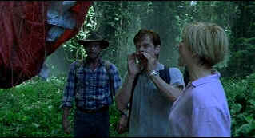

|
Jurassic Park III (SE)/
B,A |
|
Universal/2001/93/ANA 1.85 |
Alan Grant isn't too convincing early on when he says
that nothing could drag him back to Jurassic Park. You know it's only a
matter of time until crack paleontologist rant once again faces off
against the genetically recreated dinosaurs. Jurassic Park III cuts
to the quick in getting to the action pronto. It depends heavily on an
audiences' familiarity with the original to cut through the dinosaur
explanations and drop its adventurers smack dap in the middle of trouble.
 |
| Calling
all dinosaurs! ©Universal |
Money is still too tempting to Alan Grant. When
he is approached by a thrill-seeking married couple with an offer to
guide them over the dinosaur habitat of Isla Sorna, he is far to easy prey.
Grant isn't the best tour guide either, but it doesn't matte because the
charade lasts only a short time. Grant finds out pretty quickly that the
Kirbys are really out to rescue their teenage son recently lost over the
island in a foolish tourist attempt. There's little time to question the
intelligence of the whole operation before the dinosaurs come rushing
through the jungle for human snacks.
Sam Neill is right at home facing off with
dinosaurs. Neill's presence is a comforting bonus in Jurassic Park III
His good nature adds a measure of relaxed familiarity to the ferocious
dino confrontations. You need an anchor of stability in the chaotic world of
nature run amok. William H. Macy and Tea Leoni join the dinosaur patrol
as estranged husband and wife Paul and Amanda Kirby. Macy seems off his
natural turf, but Leoni throws her body and screams about with like a good
horror movie veteran. Young Trevor Morgan is all right as Eric, but he fails
to deliver any of the charm of Jurassic's original youngsters.
Director Joe Johnston is right at home weaving the
wonders of CGI and live actors into a convincing blend.
A veteran of Honey, I Shrunk the
Kids and Jumanji, Johnston keeps runs a relentless race for
survival against the dinosaurs and leaves little time to contemplate the
greenery. .
Universal delivers the DVD of Jurassic Park III
with Raptor cunning. The DTS soundtrack explodes with powerful and accurate
bass thwumps to stirring effect. Surround details are precisely located and
active. You may walk out of the home theater with traces of dinosaur residue
on you cheeks. John Williams' music floats menacingly through the jungle
growth. Jurassic Park III is stunning visual assault. CGI advances
deliver ever more life-like creatures and this DVD transfer makes sure every
byte is resolved on the screen. Resolution is in maximum force. Colors are
dead-on accurate with excellent saturation. Shadow detail is revealing with
outstanding blacks. Even the fog is tightly delivers in this spectacular DVD
transfer.
A dinosaur portion of extras accompany the feature in this
special edition. There's a pretty standard making of featurette and lots of
CGI focused specials. Audio commentary from special effects team of Stan
Winston, John Rosengrant, Dan Taylor, and Michael Lantieri provides good
insights into the enormous task of making Jurassic's neo- prehistoric
creatures come to green screen life.
|
|
|
|

Click on the DVD MIA symbol for profiles of DVDs missing
in action.
Add films to the
DVD MIA
Master List by filling out a simple form.
Click Here
Check out these DVD recommendations from the Films on Disc
DVD Review Archive. For full reviews of the latest DVD releases and hundreds
more, click on the Films on Disc symbol.

The Movie Poster Archive
includes extensive poster images from the films of stars like Susan Hayward,
Kirk Douglas, Katharine Hepburn and many more. Our featured star is
Errol Flynn.
 
ISF Monitor Calibrations in the Tristate
New York area. Lots of hardware info and frequent hardware peaks from video
expert Kevin Miller. They may be judgmental, but that's the point, isn't it.
Lots of DVD reviews plus news and more.

A love of movies drives this small DVD production company,
Synapse Films. Currently
specializing in horror and cult films. Watch for new DVD releases of film
festival independents as Synapse branches out.

Nearly 40 key software and hardware companies representing leading
consumer electronics giants, major movie studios home video and music video
units have joined forces to establish the DVD Video Group.

Mystery writer Fred Hunter digs into classic films on DVD. Check out his
insightful reviews at The Classics on
DVD.
|